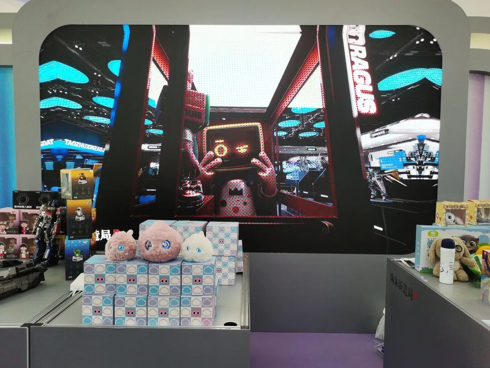
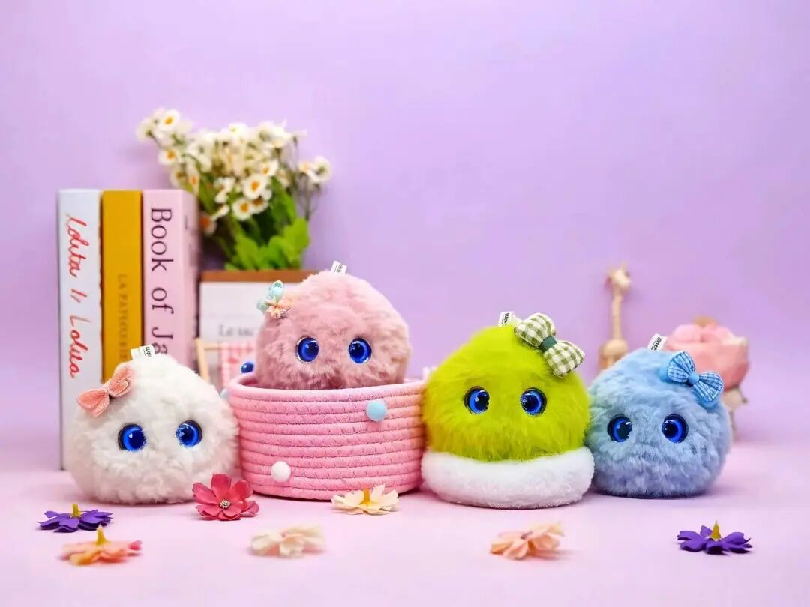

近日，超级球球联合陶朱新造局登陆服贸会。展会现场，团队与行业伙伴、观展观众深入交流，展示 AI 技术在儿童陪伴赛道的落地成果。本次参展，超级球球依托服贸会的平台优势，链接产业资源，探索 AI 赋能儿童成长的更多可能性。
中国国际服务贸易交易会（服贸会）是全球服务贸易领域规模最大的综合性展会，聚焦服务贸易创新发展，汇聚国内外企业展示前沿技术与创新成果，为产业搭建交流合作的国际化平台。

关于超级球球 AI 儿童成长陪伴机器人
超级球球 AI 儿童成长陪伴机器人，专注 0-12 岁儿童成长陪伴。产品搭载智能大模型，兼具趣味对话、启蒙早教、情绪安抚、好习惯引导等能力。在安全可控的 AI 交互前提下，陪伴孩子阅读、讲故事、解答疑问，守护儿童心理健康，用有温度的 AI，陪伴孩子快乐成长。
